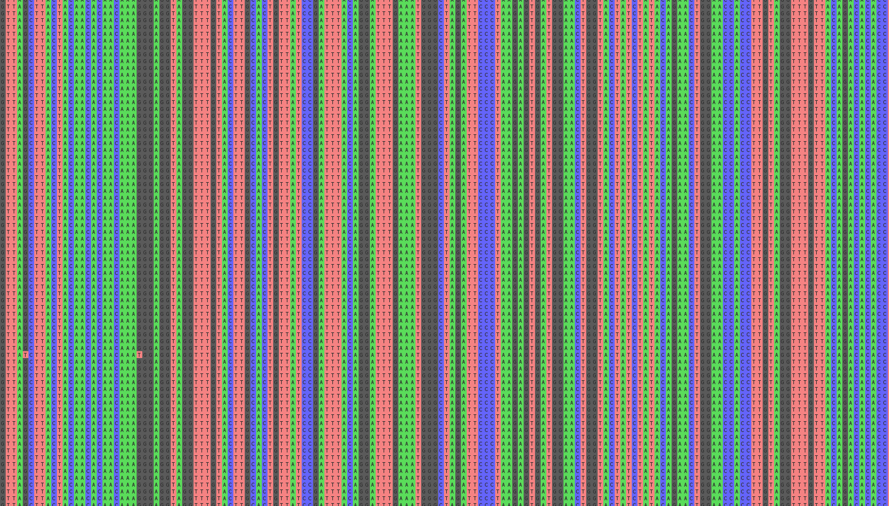

Thibault Leroy
Evolutionary biologist

Practical: PDF/HTML version.
[Left: Multiple SARS-CoV2 alignments]
 Wheat, one of the most important food for humans, has been selectively bred across the globe for millennia. We recently explored the origins and patterns of genetic diversity in this hexaploid (AABBDD) species.
Wheat, one of the most important food for humans, has been selectively bred across the globe for millennia. We recently explored the origins and patterns of genetic diversity in this hexaploid (AABBDD) species.
To do so, we used exome capture sequence data of a worldwide panel of 487 genotypes within the currently accessible wheat gene pool, including wild diploid and tetraploid relatives, domesticated tetraploid and hexaploid landraces, old cultivars and modern elite cultivars.
Comparing modern varieties (created since 1986) to founder material dating back to 1830 (i.e. landraces), we unveiled that modern wheat varieties showed an average loss of nucleotide diversity of 21.8% (33% on the subgenome A) suggesting that the last 2 centuries of breeding strongly reduced the within-species genetic diversity.
More broadly, we explored how 10,000 years of hybridization, selection, adaptation and plant breeding has shaped the genetic makeup of modern bread wheats.
More details: Pont, C., Leroy, T., Seidel, M. et al. Tracing the ancestry of modern bread wheats. Nature Genetics 51,905–911.
[Left: plot created using the wonderful R package Circlize]